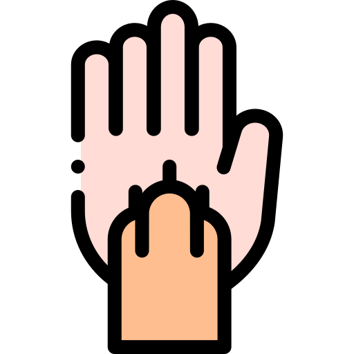

<!-- Image and text -->
<!-- <nav class="navbar justify-content-between my-navbar primary-color">
    <a class="navbar-brand text-white">
        <div class="d-inline d-sm-none">
            <svg xmlns="http://www.w3.org/2000/svg" width="30" height="30" fill="currentColor" class="bi bi-list" viewBox="0 0 16 16">
                <path fill-rule="evenodd" d="M2.5 12a.5.5 0 0 1 .5-.5h10a.5.5 0 0 1 0 1H3a.5.5 0 0 1-.5-.5zm0-4a.5.5 0 0 1 .5-.5h10a.5.5 0 0 1 0 1H3a.5.5 0 0 1-.5-.5zm0-4a.5.5 0 0 1 .5-.5h10a.5.5 0 0 1 0 1H3a.5.5 0 0 1-.5-.5z"/>
            </svg>
        </div>
      
      Dame una pata
    </a>
    
    <div class="d-none d-sm-block">

        <button class="btn primary-color text-white" (click)="goToHome()">
            Home
        </button>
        <button class="btn primary-color text-white" (click)="goToLogin()">
            Login
        </button>
        <button class="btn primary-color text-white" (click)="goToRegister()">
            Register
        </button>
    </div>

    


  </nav> -->


<nav class="navbar navbar-expand-lg primary-color mb-3">
	<div class="container-fluid">
        <div class="d-flex flex-row align-items-center">
            
            <h4 class="text-white me-3 mt-1">Dame una pata</h4>
        </div>
		<!-- Step 3: Toggle the value of the property when the toggler button is clicked. -->

		<button class="navbar-toggler btn btn-outline-secondary  icon-color" type="button" (click)="isMenuCollapsed = !isMenuCollapsed">&#9776;</button>

		<!-- Step 2: Add the ngbCollapse directive to the element below. -->

        <div [ngbCollapse]="isMenuCollapsed" class="collapse navbar-collapse mt-3 mt-sm-3 mt-lg-0 my-lg-0">
            <ul class="navbar-nav  gap-2 ms-auto">
                <li class="nav-item active">
                    <!-- Step 4: Close the menu when a link is clicked. -->
                    <a class="nav-link text-white" [routerLink]="'home'" (click)="isMenuCollapsed = true">Inicio</a>
                </li>
                <li class="nav-item">
                    <a class="nav-link text-white" [routerLink]="'login'" (click)="isMenuCollapsed = true">Iniciar sesión</a>
                </li>
                <li class="nav-item">
                    <a class="nav-link text-white" [routerLink]="'register'" (click)="isMenuCollapsed = true">Registrarse</a>
                </li>
            </ul>
        </div>
        		
	</div>
</nav>